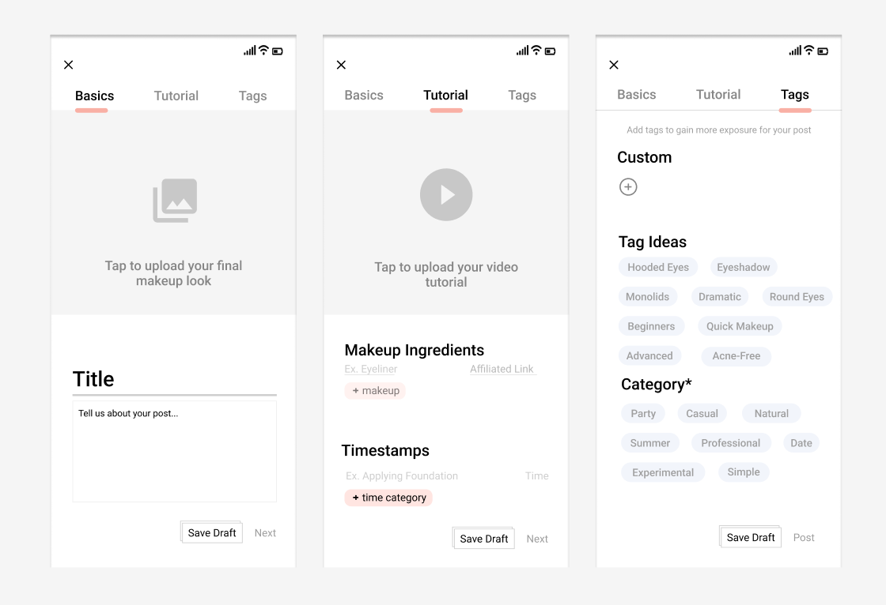

Sebela App
Sept 2021 - Present
Skills Used
Project Overview
An iOS app to share makeup looks and try them on using AR face-tracking technology.
Notable Features
- User authentication (Apple, Google, Firebase)
- Content creation/consumer style interactions
- AR face tracking technology - allows previews for how makeup will look on their face
Contributions
(Sept 2021 - present)
- Full stack iOS developer
- Help design UI
- Program UI and UX
- Manage Firebase organization/integration
- Manage analytics
The app went through various iterations over the past year.
Iteration 1
Released January 2022
I used UV mapping processes to make a 2D image (drawn with digital software like Procreate) wrap onto the user's 3D face geometry. This gave a semi-realistic filter that moved with the user's facial movements.
I coded the full functionality of this app, from the interface to the user experience to the communication with backend servers.
This iteration also eventually included a rudimentary authentication feature (using Firebase), which pushed Sebela towards a more profile-based, social-media style app.
Iteration 2
Completed July 2022 (unreleased)
We pivoted to focusing on bettering the AR accuracy. Unity had stronger technology than Apple did, so I tried making the UI using Unity 2D for easier integration with Unity's technology.
Additionally, we made the app more social media based. Now the importance was in user authentication and personal branding rather than trying on makeup with AR tech.
The user will experience three screens when uploading a post
Iteration 3
Temporarily on hold
We pivoted back to native Swift, with Unity integration. UI building in Unity was unnecessarily difficult, especially with displaying videos for the tutorials.
Users can "like" posts they see.
User profiles are a lot more fleshed out now as they're able to see their posts, likes, followers, and followings.